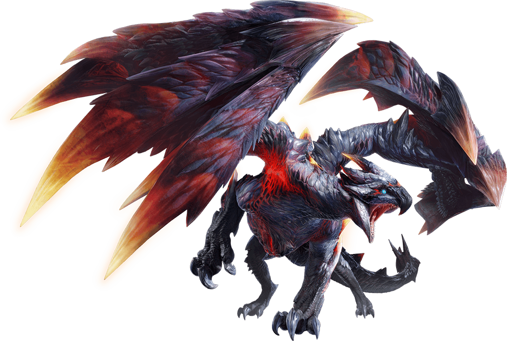
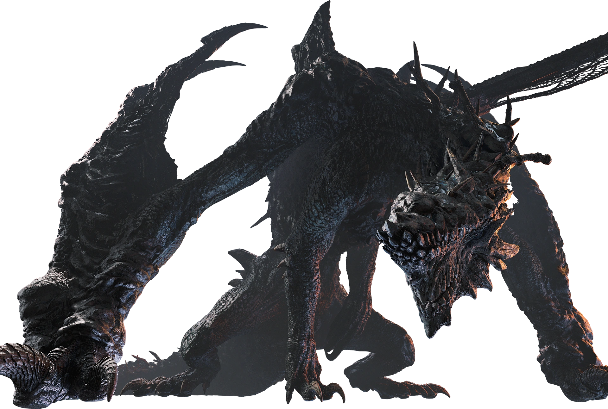
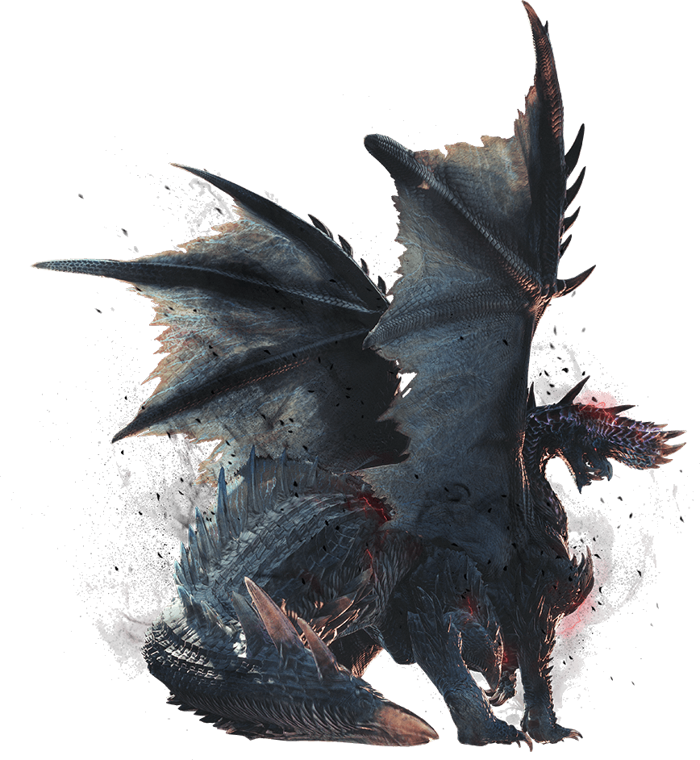
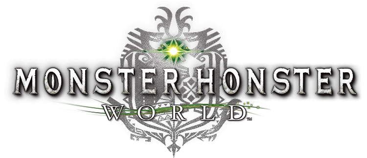
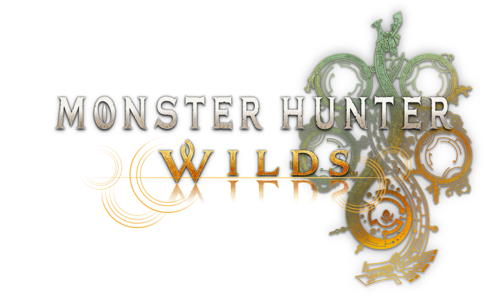

Mikä tämän sivun tarkoitus on?
Tämä sivu on vain sitä varten, että voin puhua minun lempi pelisarjasta, eli Monter Hunterista.
Jaan minun mielipiteitä muutamasta pelistä tässä sarjassa, sekä kerron vähän tämän pelin aseista ja
monstereista, jotka ovat iso osa tämän sarjan identiteettiä.
Monster Hunter sarjasta lyhyesti
Monster Hunter pelit ovat Action RPG pelejä, jotka pääasiassa koostuu tehtävistä, joissa on joku tietty
suuri tai keskisuuri alue, joka koostuu pienemmistä alueista tai "huoneista". Tehtävissä yleensä tapetaan
tai napataan 1-3 isoa monsteria, tai harvoin tehtävät voivat olla pienten monsterien tappamista tai materiaalien
keräämistä myös. Mutta peli siis pääosin koostuu pelkistä "Bossitaisteluista". Iso osa pelin identiteettiä ja taisteluiden
sulavuutta on myös pelin aseet, joita on 14 kappaletta, ja ne muuttavat pelityyliä suuresti.
Aseet

Kuten sanoinkin jo äsken, Monster Hunterissa aseet ovat tosi tärkeitä, sillä ne ovat todella erilaisia
pelityyleiltään. Tämän takia aseen valinta on ehkä tärkein asia pelaajan identiteettiä Monster Hunterissa.
Aseita on siis tosiaan 14, ja niitä on mm. Great Sword, joka on hidas mutta todella vahva, Dual Blades,
nopeat mutta pienempi damage per lyönti, sekä Lance, iso kilpi puolustusta varten. On myös muutama pitkän
matkan ase, Bow sekä Light ja Heavy Bowgun. Kaikenlaisille pelaajille siis löytyy oma aseensa. Näiden
lisäksi on myös monimutkaisiakin aseita, jotka ovat Switch Axe sekä minun lemppari, Charge Blade, jotka ovat
molemmat aseita, jotka voivat vaihtaa muotoaan kahden eri muodon välillä. Monipuolisuutta aseissa siis löytyy.
Muutama minun lempi monstereista
Valstrax

Valstrax on mielestäni erittäin hieno monsteri, ja ainakin ulkonäöllisesti minun lemppari.
Sen taistelu ei ole ehkä ihan mitenkään erityinen minun mielestä, mutta se, että se on monsteri joka
lentää kuin se olisi raketti sen erikoisilla siivillä, on erittäin mielenkiintoinen. Myös sen vahvin
isku on siisti, koska se lentää erittäin korkealle taivaalle, jolloin näet vain punaisen hohdon taivaalla
pyörimässä, jonka jälkeen se syöksyy täyttä vauhtia kohti pelaajaa, usein tappaen pelaajan yhdellä osumalla
jos sitä ei väistä. Valstraxin musiikki on myös erityisen hyvä, melkein taivaallisen kuuloinen.
Gogmazios

Gogmazios on yksi lukuisista jättimäisen kokoisista Elder Dragoneista. Se on siis monta
kertaa isompi kuin keskiverto iso monsteri. Sen lore on erittäin mielenkiintoinen, koska se on monsteri,
joka käyttää ravinnokseen ruutia, ja se saa sen viemällä linnojen asevarastojen tavarat. Ja kenties
mielenkiintoisin asia on, että kukaan tiedemies ei ole pystynyt selittämään miten niin iso monsteri voi
tehdä niin ilman että kukaan huomaa sitä.
Sen taistelu on tosi hieno ja erilainen muihin, koska se on
niin iso monsteri. Se on iso ja hidas, mutta sen iskut ovat vahvoja ja ylettää pitkälle. Se käyttää iskuihin
tervaa, joka peittää sen koko kehoa. Taistelun lähentyessä loppua, sen terva alkaa kuumentua ja pehmentyä,
joka tekee siitä vähän pehmeämmän, mutta myös vaarallisemman. Pelaajien täytyy tehdä siihen riittävästi
Dragon-elementin vahinkoa, tai se tekee iskun jota ei voi torjua ja se tappaa yhdestä. Tämä taistelu on
periaatteessa oikea bossi pelissä, jossa kaikki monsterit on kuin bosseja.
Alatreon

Alatreon on yksi vahvimmista Elder Dragoneista, ja se johtuu siitä että se voi käyttää kaikkia
viittä elementtiä. Tämän takia sen taistelu on tosi hankala ja mekaanisesti monimutkainen, joka johti
myös suureen kritiikkiin tätä monsteria kohtaan. Se on kuitenkin aika siisti taistelu kun sen osaa.
Sen taistelu on periaatteessa looppi, joka koostuu jää tai tuli elementin ykkösvaiheesta, dragon elementin
kakkosvaiheesta ja sen vahvasta iskusta nimeltä Escaton Judgement, jonka jälkeen se looppaa uudestaan
samat vaiheet. Alussa täytyy käyttää päinvastaista elementtiä että saa tehtyä hyvin vahinkoa siihen.
Tokassa vaiheessa pitää pyrkiä hajottamaan sen sarvet, koska jos se pääsee tekemään sen vahvan iskun ja
looppaamaan ekaan vaiheeseen ilman että sen sarvet hajotettiin, se vaihtaa ekan vaiheen elementtiä,
jolloin et saa tehtyä hyvää vahinkoa. Tokassa vaiheessa pitää myös tehdä ylipäänsä riittävästi vahinkoa,
koska sen vahva isku on myös oneshot isku jos ei siihen tehdä riittävästi vahinkoa.
Tämä on erittäin
hankala taistelu, mutta erittäin palkitseva jos sen osaa.
Pelisuositukset
Monster Hunter World

Monster Hunter World on minun lemppari näistä peleistä, ja se on ensimmäinen ns. moderni Monster Hunter peli.
Tässä pelissä vanhoihin verrattuna esim. grafiikat a kontrollit ovat paljon paremmat, ja se on enemmän mitä olettaisi
AAA pelin olevan. Tämän pelin tarina lyhyesti sanottuna kertoo tutkimusporukoista, jotka ovat lännessä saarella tutkimassa
ilmiötä nimeltä Elder Crossing, missä lähes kaikki Elder Dragonit vaeltavat meren halki tälle yhdelle saarelle.
Suosittelisin tätä, jos ei ole koskaan pelannut Monster Hunteria, mutta on kiinnostunut kokeilemaan.
Monster Hunter Wilds

Monster Hunter Wilds on tätä kirjoittaessa uusin peli tässä sarjassa, ja mekaanisesti se ei ole kovin erilainen
kuin World, mutta tietenkin graafisesti parempi ja ylipäänsä vähän parempi, niin kuin uudemmasta pelistä voisi olettaa.
Tämä peli puolestaan kertoo tutkimusretkestä itään kohti aluetta nimeltä Forbidden Lands, jossa kukaan lännestä päin ei
ole käynyt, ja jossa luultiin olevan täysin autiota ihmiselämää ajatellen. Paljastui kuitenkin, että siellä on pieniä
asutuksia "alkuperäiskansa" tyylisiä porukoita. Tutkimusretki kuitenkin muuttui uuden alueen kartoittamisesta muinaisen
Wyverian raunioiden sekä mukamas sukupuuttoon kuolleen monsterilajin tutkimiseksi. Koska tämä peli on uudempi, voisin siinä
mielessä suositella tätä myös ensimmäiseksi peliksi tässä sarjassa, mutta mielestäni World tuo ilmi Monster Hunter pelin identiteetin.
Musiikki
Vielä viimeinen asia josta puhun lyhyesti on pelien musiikit. Ne ovat mahtavia, ja ovat sopivia nopeaan taisteluun
tai rauhallisiin kyliin. Suosittelen kuuntelemaan niitä, koska ne ovat oikeasti tosi hyviä. Ei ole väliä mitä kuuntelee,
sillä melkein mikä tahansa musiikki Monster Hunterissa on hyvää musiikkia.
Yhteystiedot
Joona Ahonen
ahonenjoon@gmail.com